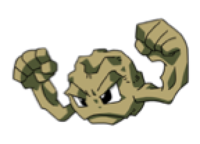
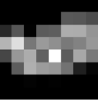

Image Compression in the Polygon Basis
A genetic algorithm to compress images using polygons
Final Writeup
Summary
I created a novel image compression scheme which combines the polygon and pixel bases. For images with less detail and harder edges, I found better compression than JPEG by a factor up to 18x.
Background
The fundamental problem here is approximating an image with a set of polygons. My image compressor uses a genetic algorithm written in Rust to maintain a set of candidate encodings and improve them over time.
The Basics
The process looks like this:
The algorithm terminates when any of the candidates reaches a certain fitness threshold, e.g. within 85% of the original image. In the basic implementation, fitness is defined as the sum of pixel differences between the rendered image for the candidate and the base image.
Although it (in retrospect) should have been written using OpenGL and shaders, I hand-rolled the renderer which took a set of polygons and generated a corresponding RGB image. At first I wrote it in Rust, but in order to optimize performance I rewrote the renderer in C and later CUDA, although it turned out that neither of these was as fast as Rust primarily since the number of polygons is small, so the final renderer is Rust-based.
This was a solid first attempt that mirrored the efforts others had done for the same problem, so I spent the remainder of the time working on optimizations for the various stages of the algorithm.
Optimizations
We'll look at the optimizations on this image:

The optimizations break down into a couple categories:
-
Mutations. These changed the way in which candidates changed over time, both by mutating existing polygons and adding new ones.
- Initial color. When a polygon is added, rather than select its color randomly, I set its color to the average of the pixels that it covers in the base image. This at least puts the color likely into a palette similar to the target.
- Hard edge heuristic. Polygons will look most natural in an image when their hard edges line up with any found in the target image, so I applied a simple edge detection algorithm (Sobel filter) to identify points in the image that line on a line. When a polygon is placed, its vertices are placed on these edges.
- Error regions. Every 100 generations, I recompute an error estimate for the image. This estimate groups the image into 25x25 blocks and sums the fitness scores within each block. I then identify the 8 lowest-scoring regions of the image and weight new polygons towards the regions in greatest need of assistance.

- Blur parameter. Because most images aren't purely flat colors and hard edges, I added a blur parameter that softens the edges of a given polygon.
-
Fitness. By modifying the fitness function, we can keep candidates that look closer to the image we want to approximate.
- Downsampling. Because the image will get compressed, it inevitably loses some quality, but we still want to retain its main features. Hence I downsample both the original image and each rendered image by a 75% and perform a fitness computation comparing the downsampled images to weight out differences in the details.
-
Quadratic difference. Rather than having linear pixel difference (i.e.
|r1 - r2| + |g1 - g2| + |b1 - b1|) I opted to use quadratic difference. This way candidates that produce larger improvements will get selected higher. - Color weighting. Because the human eye perceives the various spectrums of light differently, I weight the importance of each color channel accordingly--for example, differences in the green channel matter more than the blue.
-
Appearance. To make the rendered image more pleasant, I added two key features.
- Triangle gradients. This feature did not make it in the final algorithm, but you can see its previous incarnation in the checkpoints below. For each triangle, I had it fade at the edges to decrease the hardness of the edges. Ultimately I replaced this with the randomized blur parameter.
- Pixel fixing. When a pixel is sufficiently different from the corresponding pixel in the original image, I encode along with the polygons the exact pixel value which gets restored in the rendered image.
Compression
Our compression scheme is then, given n polygons with k points per polygon and p fixed pixels, our total file size is n * (4 + k * 2) + p * (3 + 2) since RGB values can be encoded with 3 bytes and positions can be encoded in 2 bytes for relatively small images.
Results
First, let's look at a gallery of results.
Gallery
Image 1: Pentagon. The compressor does exceedingly well (as expected) on simple shapes or other easily approximated images. For maximum compression, I turned off pixel fixing on the compression for the pentagon.
Time: 0:14
New size: 180 bytes
Original: 3470 bytes
Compression: 19.30x
Image 2: Pikachu.
Checkpoint 2
I've ported over the rendering to CUDA, although now that I've figured out Rust's foreign function interface, I might consider finally ending up just doing OpenGL, so there may be on final optimization pass to come on the rendering side.
I ran the compressor on the following images with a 70% quality threshold and got the following images:

I didn't achieve as much in the way of quality as I had hoped, mostly because I've been continuing to focus on optimizations for the past week. I'll post more images this weekend, as I'll be working through the week on creating higher quality output.
My goal over the next 10 days is to improve quality wherever possible. This includes:
- Multi-resolution sampling
- Modifying the compression to include individual pixels
- Weighting the addition of new polygons towards uncovered regions of the image
Checkpoint 1.5
In the last week, I rewrote the entire polygon renderer from scratch to use both radial gradients as well as antialiasing. I also added the basic polygon compressor. I've been working on:
- Efficiency. The algorithm takes a long time to run, so I'm doing whatever possible to make each set of mutations and fitness evaluations occur as quickly as possible, an iterative process of profiling and tweaking. The most expensive computation is rendering a set of polygons to an image (a la the 418 circle renderer), so I'm considering offloading the rendering to CUDA or something more efficient using Rust's FFI.
- Heuristics. The baseline genetic algorithm just randomly changes colors/vertex positions/etc. based on some threshold (e.g. 1/1500 chance). I'm adding heuristics to the mutations to more closely match the base image, like polygons covering regions with low fitness scores and having a start color equal to the average of the region's color in the base image.
- Constants. As mentioned, each mutation occurs with some frequency, so I'm attempting to find the optimal frequencies as well as optimal population size.
The initial incarnation of the algorithm took 900,000 generations and 3 hours to produce an image. I'm using a larger population size and hence run generations less quickly. I haven't taken the 3 hours yet to produce a quality image, but here's an image of the Mona Lisa after ~1k generations and 2 minutes:
I'll update the next checkpoint with a higher quality image.
Checkpoint 1
I'm going to preface this by saying the past two weeks have been utter hell--I've been working from morning to midnight every day trying to finish compilers, do algo, and keep up with interviews and other commitments. By the end of this week, L5 will be done for compilers, and life settles down a bit since interview season is over. Hence, I don't have too much to show for checkpoint 1, but I will work twice as hard before the next checkpoint to stay on schedule.
That said, I have a basic Rust system that accepts an image off the command line, parses it, and I have a polygon renderer. I still need to find a way to render polygons with a gradient--this means writing my own polygon renderer instead of using a prebuilt GL-based one.
The schedule remains the same--I will have a basic genetic algorithm and a .gpe output file by the end of next week. Likewise, the anticipated deliverable remains the same: I'll have a ready-to-go image compressor and .gpe renderer to show off. If I have time, I'll also build a tool that lets you visualize the population of the genetic algorithm after each iteration.
Proposal
Summary
I will create a novel lossy image compression algorithm/format which decomposes an image into a small number of polygons using a genetic algorithm.
Background
Roger Alsing showed in 2008 the possibility of representing images with polygons. He applied a genetic algorithm which randomly generates polygons and uses a stochastic selection process to prefer images closest to the one we want to generate. I want to extend this work to both a) be suitable as a new image format and b) generate optimal images as fast as possible.
Challenges
Firstly, as far as I can tell, this space hasn't been explored beyond the above blog post and subsequent discussion the topic. There are no references on optimal genetic algorithms for mapping polygons to images. I've dealt in neither genetic algorithms nor image compression before, so I'll have to explore ways to optimize both.
Resources
I'll just be using my own machine for the work. If it's suitable, I will draw from the Alsing codebase to provide a starting point for my compression algorithm. I will continue to explore the research space to find other genetic compression algorithms and see if they use any ideas applicable to my project.
Goals
Plan to Achieve
- Optimize the Alsing algorithm to find better reconstructions faster. Alsing only explored this space in brief, so I think there's definitely room for more work.
- Create a new file format for my compressed images that achieves at least a 2x reduction in size over JPEG without a significant loss in comparative quality.
Hope to Achieve
- Reduce compression times to something actually usable by a consumer.
- Achieve quality greater than or equal to JPEG without trading compression.
Schedule
- Friday, November 14: have basic algorithm up and running, i.e. converting the Alsing algorithm to Rust.
- Friday, November 21: compressed image format is done, and images are being saved to .gpe.
- Monday, December 1: research is done and genetic algorithm is as optimized as possible for correctness.
- Monday, December 8: algorithm is further optimized for speed, and benchmarks are created. Rest of the time is spent running tests and doing writeup.